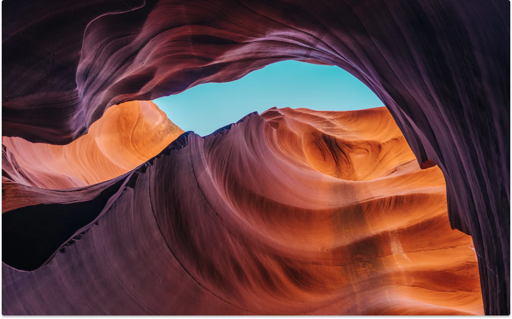
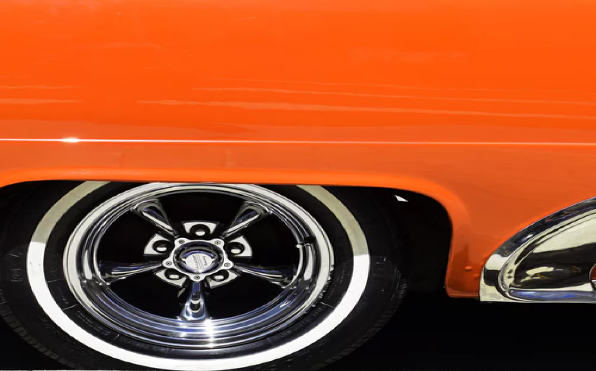
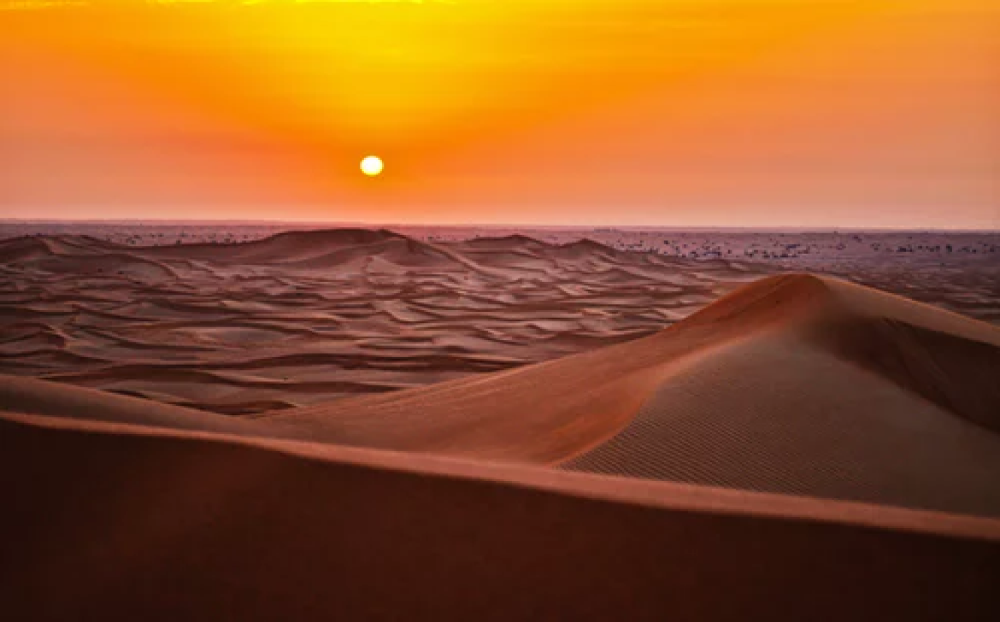
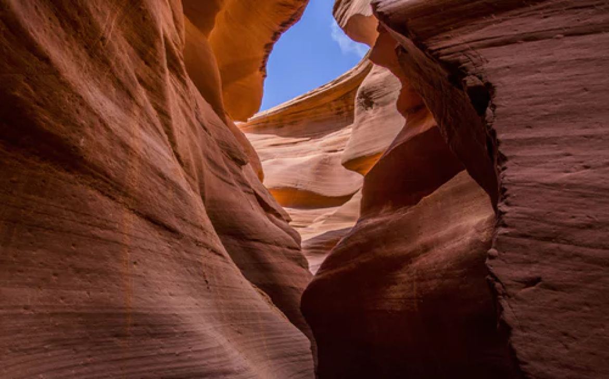
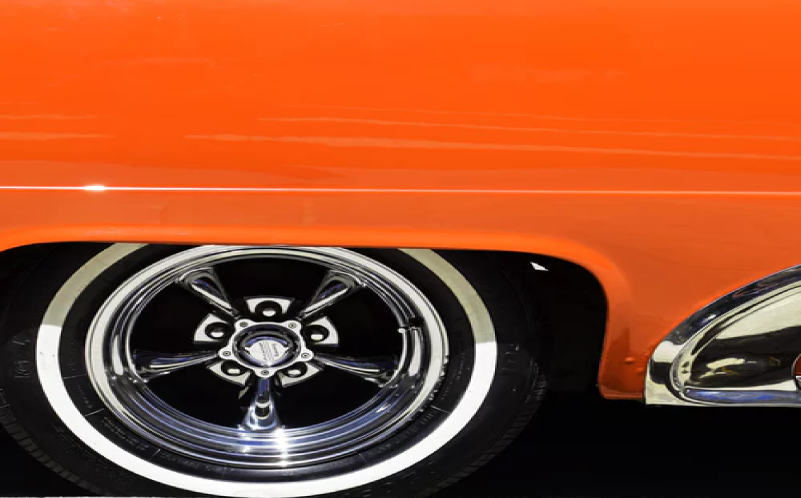
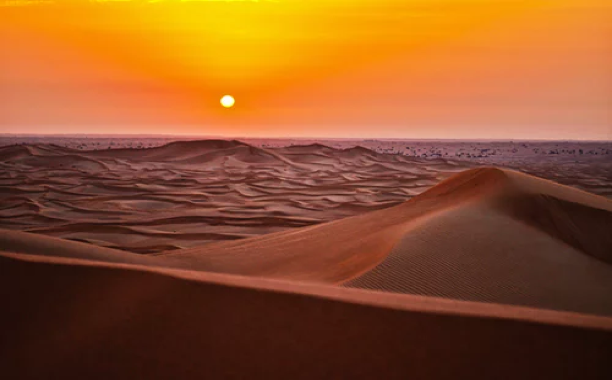
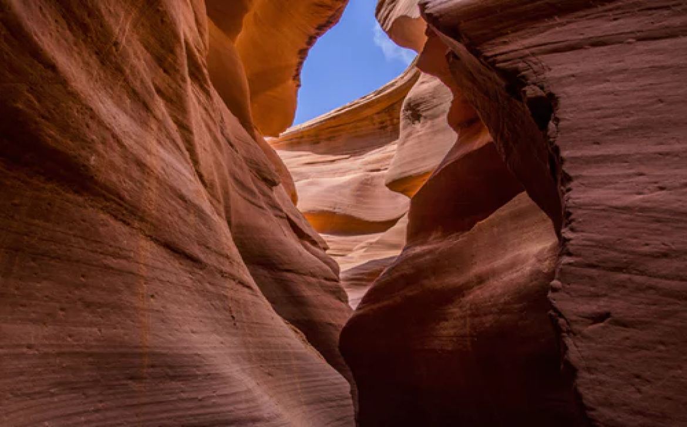

 





DateJuly 2019 |
LocationMorrocan Highland |
CameraCanon EOS1D Mark IV |
Lens70mm f2.8 @ 1/16” |
Mineral Carvings
Deep in the deserts of Morroco, lies a dried-up valley, featuring some of the most exquisite rock formations, carved millions of years ago.
To truly experience these beautiful formations, one has to visit them in person. I hope my photos have managed to capture the sheer size – gravitas even – and spellbinding nature of these eroded walls.
Stay up-to-date with my updates
Latest